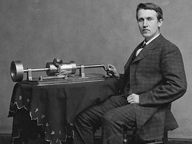
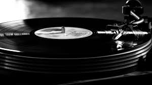
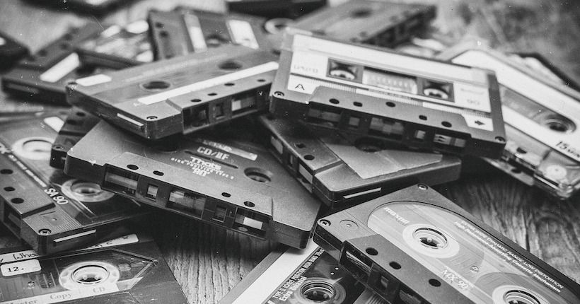

Dans le monde de la musique, le numérique a été révolutionnaire pour le stockage de fichiers (CD, DVD-Audio etc), la création de nouveau son, leur analyse, leur distribution et a en général simplifié la vie des producteurs et artistes. L'utilisation du numérique se fait aujourd'hui dans toutes les étapes et moments de la création d'un chanson; de la création de son instrumental (souvent synthétisé), au retouches des sons après l'enregistrement, jusqu'au concert. Grâce au numériqe la distribution de musique est devenue largement accessible. Avec les CD, lecteurs MP3, les téléphones portables et leurs application de streaming et tellement d'autres, presque tout le monde peut écouter tranquillement ses chansons préférées.
Avant les enceintes ou ecouteurs bluetooth connecté à nos portables, on écoutait la musique bien différemment...
En 1877, Edison invente le phonographe, à l'époque cette invnetion est révolutionnaire dans le sens où il est désormais possible d’enregistrer et d'écouter une musique. Puis vint le gramophone dans les années 1900. Contrairement au phonographe celui-ci etait beaucoup plus présent chez les gens. En plus de cette concurrence, les deux appareil n'était pas compatible avec les mêmes supports, le phonographe fonctionnait grâce a un cylindre métalique alors que le gramophone utilisait un disque. Cette grande concurrence à engendrer une production de masse des disques pour gramophone dans les années 1910. Suite à ces grandes inventions et productions de masse, la musique se répend enormément.
Peu de temps après, l’arrivée des machines des tourne disque électriques rendait l’utilisation de la gomme-laque (composant du disque shellac qui permet la lecture) moins indispensable, l’industrie du disque se penche sur des disques en vinyle.  Après les disques en vinyle, les cassettes sont apparrues. Apparues durant les années 1970, la cassette audio est une deuxième mini révolution pour l’industrie musicale. Elles créent une nouvelle manière de consommer la musique allant jusqu’à concurrencer et même dominer les disques en vinyle en augmentant la liberté de ses consommateurs. Ils pouvaient enregistrer, programmer, échanger, et découvrir sans limite la musique qu’ils souhaitaient. Grâce aux cassettes, sont nées ce que l’on connait sous le nom de "compilations", elles étaient Conçut par des DJ et qu'ils enregistraient et vendaient ou donnaient pour faire leur pub. Ce succès des cassettes s’explique aussi par l’amélioration de la qualité de son proposé mais aussi car on pouvait l'écouter partout et l'emmener partout ! Avec le Walkman de 1979, le Ghetto Blaster et l’autoradio ont permis à la cassette de devenir le support audio le plus moderne et populaire des années 1980.
Dans les années 2000, les premiers CD sont arrivés. C’est aussi à ce moment que l’industrie du disque obtient son plus gros bénéfice mercantile, s’appuyant sur la réédition des vinyles en CD. Il faut savoir que le CD, tout en offrant une qualité sonore bien meilleure que le vinyle, coûte aussi moins cher à produire, minimum moitié moins. Mais depuis peu tout cela a été dématérialiser comme beaucoup d'autres choses.